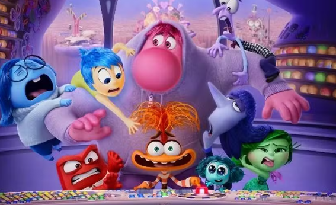

- Alegria: Tenta manter a Riley feliz e otimista.
- Tristeza: Mostra que sentir tristeza também é importante.
- Raiva: Aparece quando Riley se sente injustiçada.
- Medo: protege Riley dos perigos.
- Nojinho: Evita que ela passe por situações desagradável.
- Tédio: Representa a falta de interesse e motivação.
- Inveja: admira o que os outros tem e faz Riley querer ser como eles.
- Ansiedade: Esta sempre preocupada com o futuro e tenta evitar que Riley passe por situações dificeis.
Imagem dos personagens

Historia
Riley precisa deixar sua cidade e seus amigos para morar em São Francisco. Com essa mudança, suas emoções entram em confiltro. Alegria